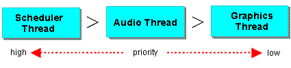
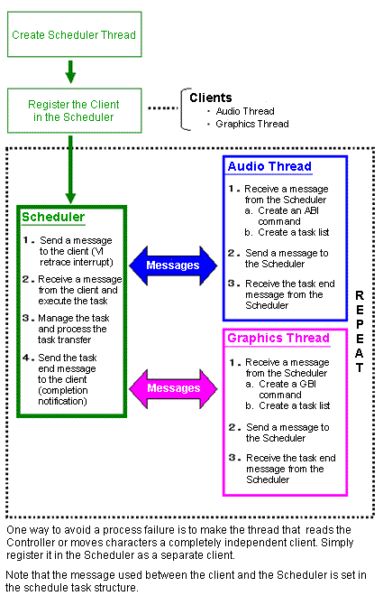

The CPU, RSP, and RDP processors each have a leading role in N64 when it comes to executing audio and graphics. The CPU starts the task, and the RSP and RDP actually execute it. These hardware processors take partial control of the work and can enhance processing efficiency dramatically by making processes operate in parallel. For efficient parallel processing, it is best to create a scheduler thread to manage and coordinate the execution of the audio and graphics threads.
The audio command list and graphics display list are usually created just before the frame, but a problem occurs if the process does not end within one frame (1/60 second). In the case of audio, the sound may pause inappropriately or popping noises may occur. In the case of graphics, because the frame buffer is not updated, it continues to show the last image.
If the audio process does not end within one frame, you can avoid inappropriate pauses and noises by giving priority to the audio process even if you have to interrupt the graphics process. Therefore, give audio threads a higher priority than graphics threads, and manage the thread by using a scheduler. A scheduler is simply a thread that has a higher priority than both the audio and the graphics threads.

There is a sample program included on the same CD that holds this manual. It shows how to use the scheduler thread to manage the audio and graphics threads to avoid noises and jerky graphics. You'll find it in the following directory:
\N64Manuals\pc\allman\samples\Mix
The following illustration shows thread priority:

The following illustration shows the scheduler process flow:

Nintendo® Confidential
Copyright © 1999
Nintendo of America Inc. All Rights Reserved
Nintendo and N64 are registered trademarks of Nintendo
Last Updated March, 1999